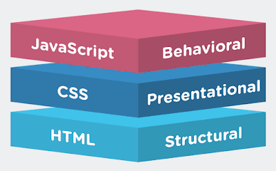
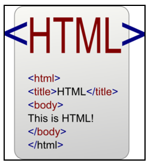
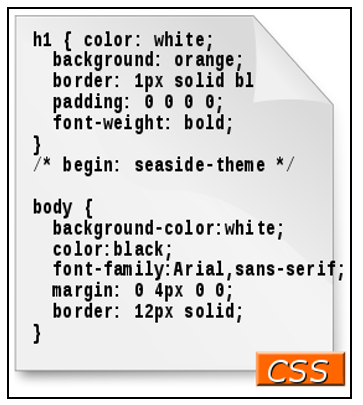

Aprende algo nuevo
La mejor información esta aquí
HTML, CSS Y JAVASCRIPT
Muchos de nosotros que de una u otra manera tenemos relación con la programación, alguna vez nos hemos chocado con estos conceptos, sin tener la idea de que son y a que se dedican individualmente. Esto ocurre muy a menudo y nos hemos preguntado. ¿Cual es la diferencia entre html, css, Javascript?

¿QUÉ ES HTML?
El lenguaje HTML (HyperText Markup Language) nos aporta la estructura básica de los sitios, mejorada y modificada por otras tecnologías como CSS y JavaScript que vemos a continuación. Es el lenguaje famoso por sus etiquetas conocido por todos los que se han inmerso en el desarrollo de páginas web.
Es la estructura de la página web. Es decir, cuando creamos una página web le añadimos los elementos que van a aparecer como imágenes o textos.
A nivel técnico es un lenguaje de marcado que usa etiquetas para crear cada elemento de una página web.

HTML (lenguaje de marcas de hipertexto), es el lenguaje donde se define la información o el contenido del documento, el formato de los archivos es, html.
Como vemos, existen diferentes servidores web para diferentes tipos de necesidades, ahora vamos a explorar cuáles son las clases de servidores web más conocidos hoy en día a nivel de software.
VIDEO EXPLICACIÓN HTML
¿QUÉ ES CSS?
Por otro lado, CSS u Hojas de Estilo en Cascada (Cascading Style Sheets) se utiliza para controlar la presentación, el formato, y el diseño de nuestra aplicación. Gracias a ella podemos dar forma al estilo que queremos que se muestre.
Es el estilo que le aplicamos a cada uno de los elementos creados previamente en el HTML. Por ejemplo, le añadimos a los párrafos un color al texto, una tipografía, un tamaño
En CSS se usan los «selectores», que seleccionan (valga la redundancia) etiquetas de HTML, para añadirle una serie de propiedades y aplicarle el estilo.

Hojas de estilo en cascada.
¿QUÉ ES JAVASCRIPT?
JavaScript se utiliza para controlar el comportamiento de los diferentes elementos, esto es, aporta funcionalidad, dinámica, a nuestros elementos.
Generalmente (y de forma muy básica) se conoce como la animación que suele aparecer en una web. Por ejemplo: hago click en un párrafo y el párrafo desaparece o cambiar de color.
Aunque Javascript realmente es un lenguaje de programación y un «dialecto» de ECMAScript. Y se usa para diferentes tecnologías como rutinas de navegador (NodeJS), frameworks(Angular, React, Vue) y animaciones en páginas web com frameworks(Tween Max, jQuery, Mootools).
En empresas del tipo agencia de publicidad técnicamente se pide más el uso de jQuery. Mientras que en startups, y bancos se comienzan a pedir más conocimiento de frameworks.
Lenguaje de programación interpretado
DISEÑOS WEB ACTUALES
Cada poco tiempo en el mundo de diseño web los perfiles que van demandando las empresas van cambiando con respecto a los frameworks y tecnologías que se usan de forma interna en cada empresa.
De momento y hasta final de 2018, podemos definir estos 4 perfiles web:
Frontend Web Developer:
Se resume en maquetación y conoce los lenguajes de HTML, CSS y Javascript. Para usar Javascript de forma más sencilla puede conocer frameworks como jQuery y MooTools.
Backend Web Developer: Es un perfil donde principalmente se conoce lenguajes como PHP, Python, y conexión con bases de datos con (como mínimo) MySQL.
Mean Web Developer:
Es un perfil más avanzado que el Frontend Web Developer, precisamente porque conoce los mismos lenguajes que el perfil mencionado y además de conocer frameworks como Angular o ExpressJS para usar rutinas como NodeJS y servicios para guardar información como Firebase o MongoDB.
FullStack Web Developer:
Un desarrollador Fullstack Web Developer se resume en todo lo anterior. Es decir es capaz de crear un servicio/web desde la maquetación hasta la programación y conoce todos los lenguajes: HTML, CSS, Javascript, PHP, MySQL, Angular, NodeJS, Firebase o usar sistema de base de datos como MongoDB.
Fuentes
1. https://www.cursosgis.com/como-integramos-los-lenguajes-html-css-y-javascript/
2. https://medium.com/@eduardofierropro/qu%C3%A9-es-html-css-y-javascript-lenguajes-y-perfiles-de-trabajo-3a1b8ed18e66
3. https://grupo4herramientasinformatica.blogspot.com/2017/07/que-es-html-css-y-javascript.html
Nuevos Temas llegaran a nuestra web, Actualizandonos dia a dia.